Training Erp Gui - Tutorial
How to Send XI Messages to SAP BTP Integration Suite Using Training ERP GUI
Mustafa Alp ·
Introduction
SAP Process Integration (PI) and Process Orchestration (PO) have traditionally provided the infrastructure for exchanging XML messages between enterprise systems using the XI messaging protocol.
With SAP Integration Suite on SAP Business Technology Platform (SAP BTP), developers can continue working with XI-based integration scenarios through the XI sender adapter.
However, testing XI communication usually requires access to an SAP system capable of generating and sending XI messages.
To make this process easier to explore, I developed Training ERP GUI, an independent, Python-based educational application that simulates selected ERP integration transactions and communication workflows.
In this tutorial, we will walk through how to create a Service Interface, generate a proxy object, configure an HTTP destination, and send an XI message from Training ERP GUI to SAP Integration Suite.
We will also introduce DesignObjectCreator, a separate tool I developed to manage integration design objects.
1. Architecture Overview
Our example integration scenario consists of the following components:
Training ERP GUI
|
| SPROXY - Proxy Simulation
|
| XI SOAP Message
v
HTTP Destination (SM59)
|
v
HTTP Sender/Receiver (SXMB_ADM)
|
| HTTPS
v
SAP BTP Integration Suite
|
| XI Sender Adapter
v
Integration Flow
|
| Message Processing
v
Receiver SystemThe application simulates the sender-side integration workflow, while SAP Integration Suite handles the actual message processing.
The main components are:
DesignObjectCreator: Creates and manages Service Interface definitions and XML Schema (XSD) data types.
SPROXY: Provides a simulated interface for working with generated proxy objects and testing outbound messages.
SM59: Maintains HTTP destination settings.
SAP Integration Suite: Receives and processes the XI messages through an integration flow.
Training ERP GUI is not an SAP application server or a replacement for SAP PI/PO. It is a learning and testing environment designed to reproduce selected integration concepts.
2. Prerequisites
Before starting, prepare the following:
- Training ERP GUI installed and running.
- Access to DesignObjectCreator. (optinal)
- An SAP BTP subaccount with Integration Suite access.
- An integration flow configured with an XI sender adapter.
- A deployed integration flow and its endpoint URL.
- Appropriate authentication credentials and authorization to invoke the endpoint.
The sender and receiver configurations must use compatible message structures and communication settings.
3. Creating Design Objects with DesignObjectCreator
Before creating a proxy object, we need to define the integration interface and its message structure.
For this purpose, I developed a tool called DesignObjectCreator.
DesignObjectCreator manages the "design_objects.json" file used to store integration design object definitions.
Instead of editing the JSON file manually, the tool provides a way to maintain design objects such as Service Interfaces and Data Types.
You may access PyDesignObjectCreator from gitlab repostory link below:
https://gitlab.com/alp.mustf/pydesignobjectcreator.git3.1 Creating a Service Interface
After defining the message structure, the next step is creating a Service Interface.
For our example, we will use the following interface definition:
| Property | Example value |
|---|---|
| Service Interface | SI_Employee_Out |
| Namespace | urn:training:erp:employee |
| Direction | Outbound |
| Communication | Asynchronous |
| Message Structure | EmployeeMessage |
These are example design values, not a prescribed JSON schema.
Using DesignObjectCreator, create the Service Interface and associate it with the appropriate message definition.
The resulting design objects are maintained in:
design_objects.jsonThis file acts as the local repository of design metadata for the simulated integration environment. you must to copy this file to "data" directory in Trainin Erp Gui
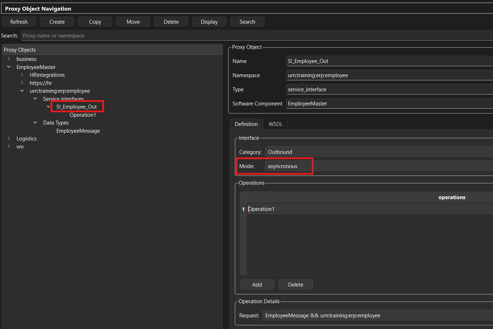
Important: DesignObjectCreator does not create an actual SAP Enterprise Services Repository object. It maintains definitions used by Training ERP GUI.
Alternative Aproach to Create Sproxy Objects
You may just add json below to "data/design_objects.json" file to see SI_Employee_Out interface in SPROXY
{
"software_component": "EmployeeMaster",
"namespaces": [
{
"namespace": "urn:training:erp:employee",
"service_interfaces": [
{
"direction": "",
"mode": "asyncronous",
"name": "SI_Employee_Out",
"description": ""
}
]}]}4. Configuring the HTTP Destination in SM59
The next step is configuring the target connection.
In Training ERP GUI, open the simulated SM59 transaction and create an HTTP destination.
For this example, we will use an HTTP connection of Type G.
Example configuration:
| Field | Example |
|---|---|
| RFC Destination | BTP_XI_RECEIVER |
| Target Host | my-tenant.example.com |
| Path Prefix | /xi/employee |
| Protocol | HTTPS |
| Authentication | Client Credentials as Basic auth |
Replace the example hostname and path with the actual deployed XI sender endpoint from your SAP Integration Suite tenant.
Do not include the protocol twice when constructing the URL.
The expected target URL would look like:
https://my-tenant.example.com:443/cxf/employee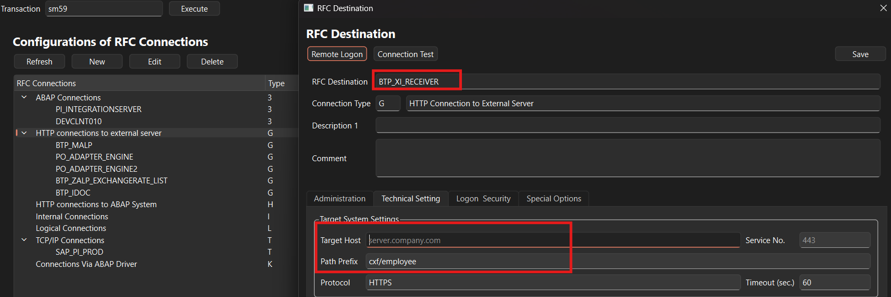
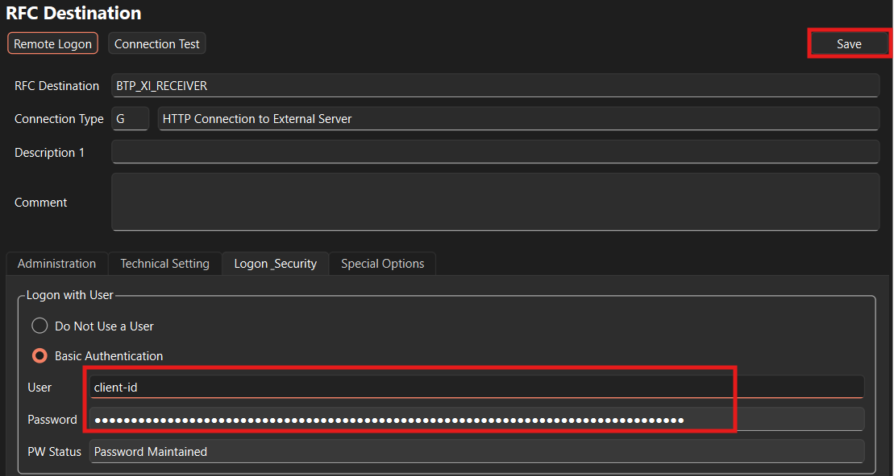
5. Creating an Integration Flow in SAP Integration Suite
Now we need to prepare the receiving integration flow.
Open SAP Integration Suite and navigate to Cloud Integration.
Create an integration flow containing:
A Sender participant.
An XI sender adapter.
A processing step, such as a Content Modifier or mapping.
A Receiver participant or another suitable processing endpoint.
Configure the XI sender adapter according to the requirements of your integration scenario.
For example, the sender adapter's address might be:
/employee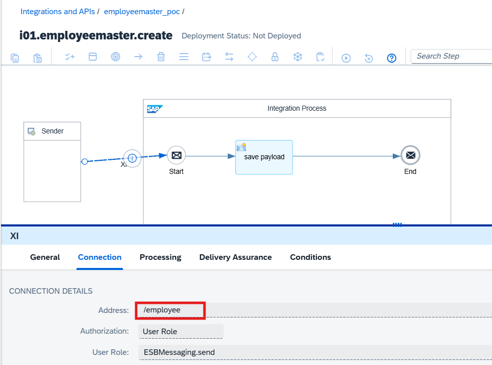
The complete endpoint URL must be taken from the deployed integration flow and its runtime environment.
After configuring the integration flow, deploy it and confirm that it is running.
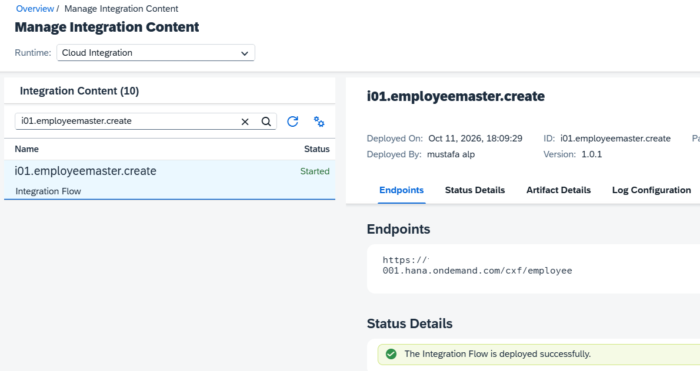
6. Configuring the Integration Engine with SXMB_ADM
Before sending XI messages from Training ERP GUI, we need to configure the Integration Engine.
In an SAP system, the SXMB_ADM transaction is used to maintain Integration Engine configuration settings, including the role of the Integration Engine and the destination used for integration communication.
Training ERP GUI provides a simulated SXMB_ADM environment to demonstrate how these configurations influence outbound XI message processing.
6.1 Understanding the Integration Engine
The Integration Engine is responsible for processing XI messages and forwarding them according to the configured integration environment.
In a traditional SAP PI/PO landscape, the communication architecture typically looks like this:
SAP Application System
|
| ABAP Proxy
v
Integration Engine
|
| XI Protocol
v
SAP PI/PO
|
v
Receiver SystemFor our training scenario, we want to send the XI message directly to SAP Integration Suite instead of SAP PI/PO.
Training ERP GUI
|
| SPROXY
v
Simulated Integration Engine
|
| SXMB_ADM Configuration
v
SM59 HTTP Destination
|
| HTTPS / XI
v
SAP BTP Integration Suite
|
| XI Sender Adapter
v
Integration Flow6.2 Configuring Sender/Receiver ID
Open the simulated SXMB_ADM transaction in Training ERP GUI.
Select "Configure Sender/Receiver ID" in the left menu.
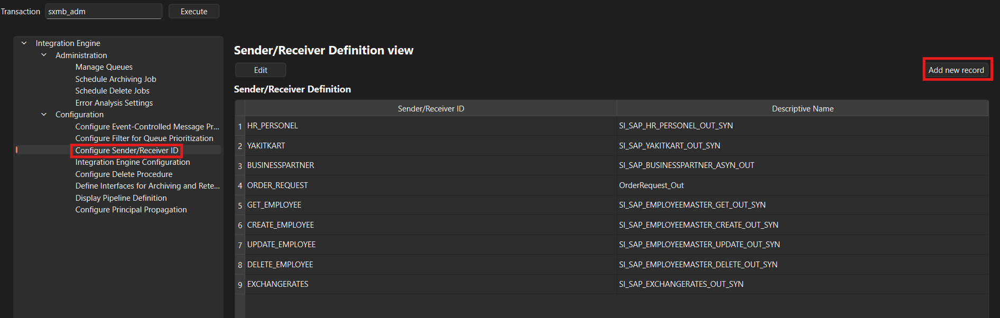
Click to "Add new record" button
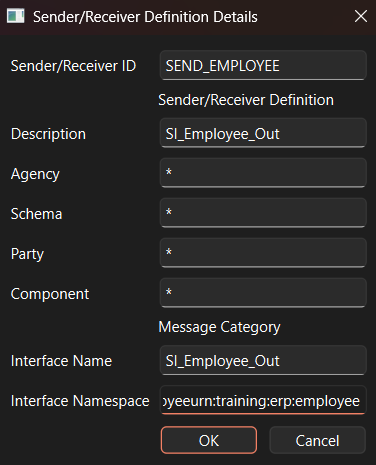
Fill fields according to below table.
| Paramter | Value |
|---|---|
| Sender/receiver ID | SEND_EMPLOYEE |
| Description | SI_Employee_Out |
| Interface Name | SI_Employee_Out |
| Interface Namspace | urn:training:erp:employee |
| Other fields | * |
6.3 Configuring Integration Engine Configuration
Select "Integration Engine Configuration" in the left menu.
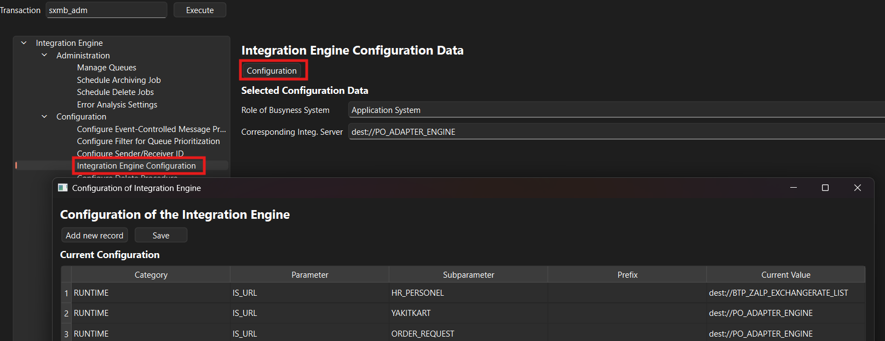
Click "Add new record" button in the new window. which will open a new popup to create a new record.
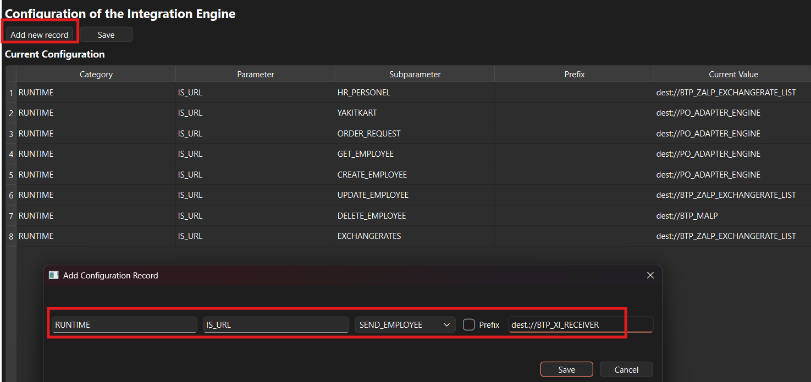
Fill the form according to below table.
Parameter Value
Category RUNTIME
Parameters
Select SEND_EMPLOYEE
Curren Value
| Paramter | Value |
|---|---|
| Category | RUNTIME |
| Parameters | IS_URL |
| Select | SEND_EMPLOYEE |
| Curren Value | dest://BTP_XI_RECEIVER |
Click the "Save" Button
7. Sending the XI Message from SPROXY
Return to Training ERP GUI and open the SPROXY simulation.
Select the outbound proxy object created for the employee interface.
Prepare a sample payload:
<EmployeeMessage>
<Employee>
<EmployeeID>10001</EmployeeID>
<FirstName>Mustafa</FirstName>
<LastName>Alp</LastName>
<Department>IT</Department>
</Employee>
</EmployeeMessage>Select the configured Servi interface
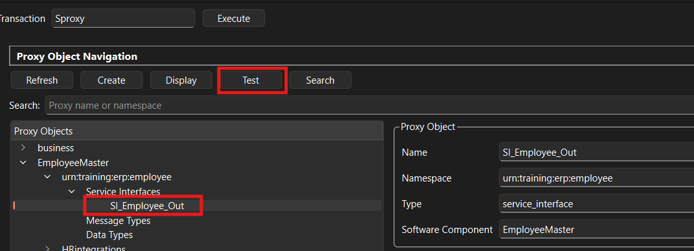
Click "Test" button to start sptoxy testing tool.
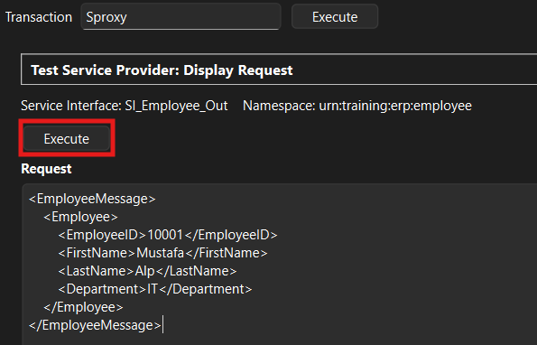
Paste example message to text field and click "Execute" above "Request" label.
8. Monitoring Messages in SAP Integration Suite
After sending the message, open SAP Integration Suite and navigate to:
Monitor → Integrations and APIs → Message Processing
Locate the message using the available monitoring information, such as its processing time, integration flow, or message identifier.
Review:
- Processing status.
- Sender adapter information.
- Message processing log.
- Error details, if applicable.
- Payload or trace information, when tracing is enabled and access is authorized.
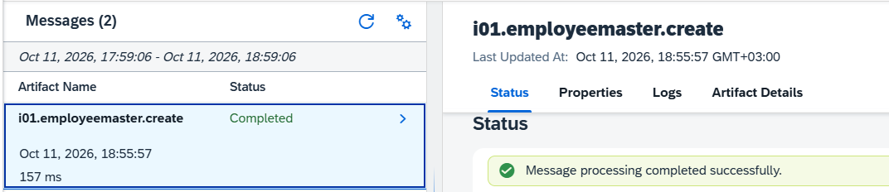
A successful HTTP response does not necessarily mean the business transaction completed successfully.
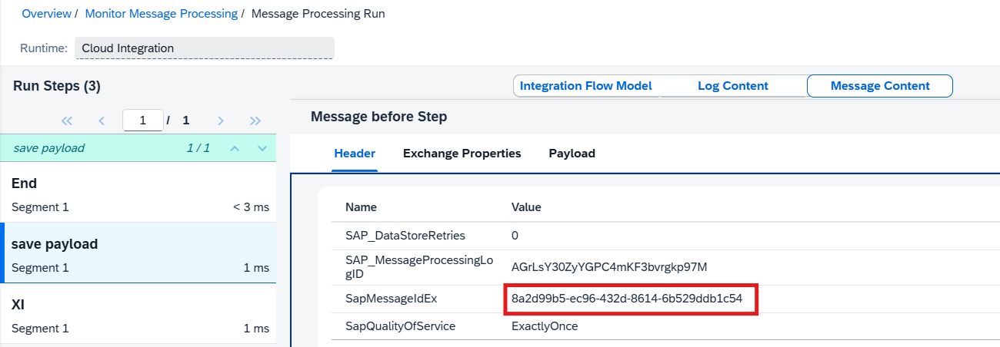
You may see the message in SXMB_MONI screen. Message ID shoulc match SapMessageIdEx header in the Sap Integration Suit message monitoring.
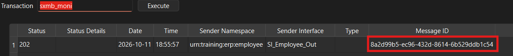
9. Troubleshooting Common Issues
HTTP 401 — Unauthorized
Possible causes include invalid credentials, incorrect authentication configuration, or missing permissions.
Verify the authentication mechanism required by the deployed endpoint.
HTTP 403 — Forbidden
The request may be authenticated but not authorized to invoke the integration endpoint.
Check the assigned roles, runtime permissions, and endpoint configuration.
HTTP 404 — Not Found
Confirm that the integration flow is deployed and that the configured endpoint path is correct.
HTTP 500 — Internal Server Error
Inspect the SAP Integration Suite message processing log and exception details.
For XI communication, pay particular attention to malformed SOAP headers, missing payload attachments, invalid content identifiers, and incompatible protocol structures.
10. Why Use Training ERP GUI?
For developers learning enterprise integration, having access to a complete ERP system is not always practical.
Training ERP GUI offers a way to experiment with selected integration concepts in a local environment.
By combining DesignObjectCreator, SPROXY simulation, HTTP destination configuration, and SAP Integration Suite, developers can explore the relationship between interface design and runtime message processing.
The project is particularly useful for understanding:
- >How interface definitions relate to proxy objects.
- How XML schemas describe message structures.
- How outbound destinations are configured.
- How XI messages are transmitted.
- How integration flows process incoming messages.
- How to troubleshoot connectivity and message-processing errors.
11. Conclusion
Sending XI messages to SAP BTP Integration Suite requires both design-time configuration and runtime communication.
In this tutorial, we explored how to use Training ERP GUI to simulate the sender-side workflow, starting with interface definitions in DesignObjectCreator and continuing through proxy testing, destination configuration, and message monitoring.
DesignObjectCreator helps maintain Service Interface definitions and generate XSD data types, while Training ERP GUI provides the simulated runtime environment for testing outbound integration messages.
Together, these tools offer a practical approach to learning enterprise integration architecture without requiring a full SAP ERP landscape.
Disclaimer
Training ERP GUI and DesignObjectCreator are independently developed educational tools. They are not affiliated with, endorsed by, or sponsored by SAP SE. SAP product names are used solely to identify the technologies discussed.